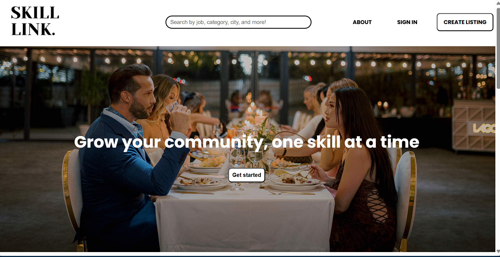

SkillLink
Web Development • HTML • CSS • JavaScript • Backend
SkillLink is a website that helps users discover jobs that match their interests and abilities through an advanced categorization system.
I contributed to both front-end and back-end development, focusing on responsive UI design and implementing the job categorization features.
Through this project, I strengthened my web development, teamwork, and problem-solving skills.